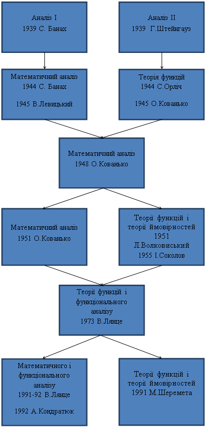

ІСТОРІЯ КАФЕДРИ
Колись вважалося, що в університеті є кафедра, якщо є штатна посада професора. Перша кафедра математики в університеті була з 1744 року. До 1900 року була, як правило, одна кафедра математики. З 1900 вже було дві кафедри, а в 20-30-х роках -- 4 кафедри математики. В 1939 році після реорганізації університету на утвореному фізико-математичному факультеті було відкрито такі математичні кафедри і призначені їх керівники
| аналізу ІІ |
проф. Г.Штейнгауз |
| алгебри |
проф. Є.Жилінський |
| теорії ймовірностей |
проф. М.Зарицький |
| механіки |
проф. П.Ю.Шаудер |
У 1939-41 роках членами кафедри аналізу І були професори С.Сакс, В.Левицький, Л.Хвістек, В.Орліч, асистенти О.Племіцер, С.Лея, А.Алексевіч.
Членами кафедри аналізу ІІ були професор Г.Ауербах, доцент М.Айдельгайт, асистент М.Штарк.
Після відновлення роботи університету в 1944 році на фізико-математичному факультеті були кафедри
| математичного аналізу |
проф. С.Банах |
| теорії функцій |
проф. С.Орліч |
| алгебри |
проф. Є.Жилінський |
| загальної математики |
проф. М.Зарицький |
| механіки |
проф. В.Нікліборц |
| теорії ймовірностей і математичної статистики |
проф. Б.Гніденко (в 1945 р.) |
Перші дві кафедри неодноразово об'єднувались, ділились і змінювали назви.
Це відображено в наступній діаграмі: |

|